内置 image_gen 生成。按实际画面复杂度人工复核：低 073/076/079，中 071/074/077/080，高 072/075/078。以下为 768×432、WebP 质量 30 预览。源图未接入游戏；B 展示全部候选。
单角色配镜面反射、三件挂衣、双道具箱与舞台帘，信息量适中。
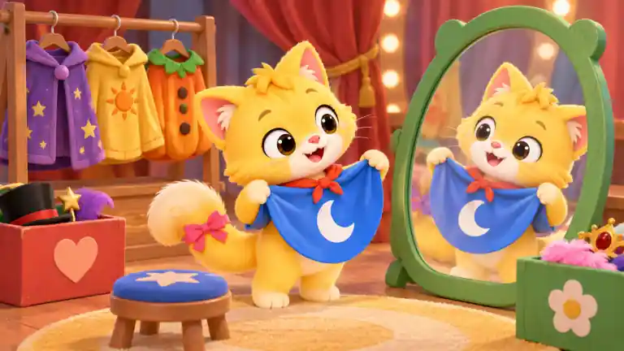
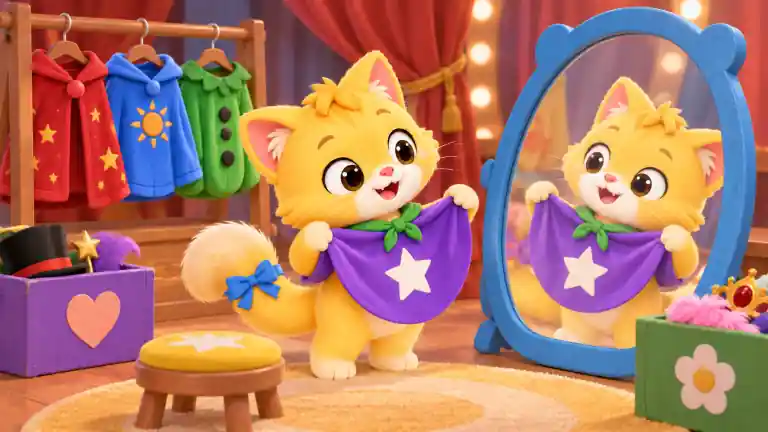
猫粉尾饰变蓝；蓝披风变紫；披风白月变白星；红系带变绿；绿镜框变蓝；紫挂衣变红；黄挂衣变蓝；橙挂衣变绿；蓝星凳变黄；红心箱变紫
双角色、纸冠、剪纸、丝带、胶水、服装架和多层舞台道具形成高密度搜索。
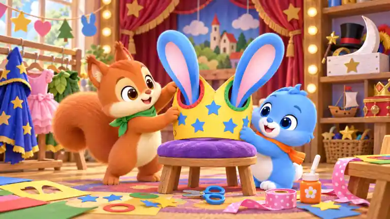
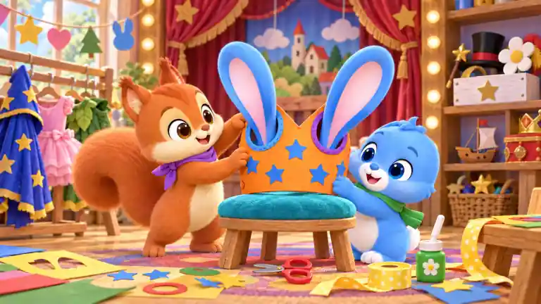
松鼠绿巾变紫；兔橙巾变绿；黄冠变橙；左红耳孔边变蓝；右绿耳孔边变紫；紫凳变青；蓝剪柄变红；橙胶水变绿；粉丝带变黄；箱白月变白花
单角色、迷你椅和大坐垫为三个大形体，墙地留白明显。
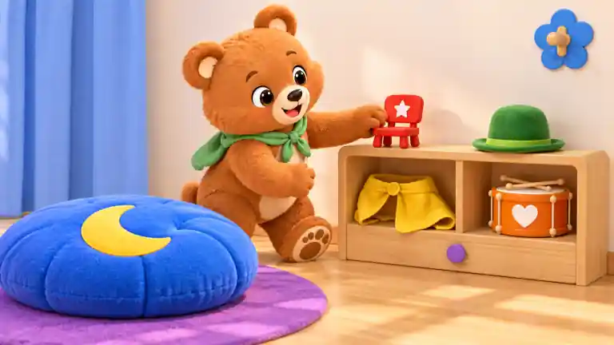
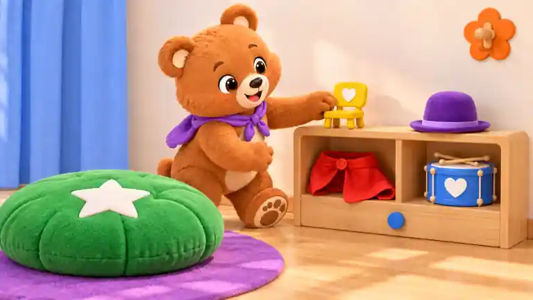
熊绿巾变紫；红小椅变黄；椅白星变白心；蓝大垫变绿；垫黄月变白星；紫柜钮变蓝；黄披风变红；绿帽变紫；橙鼓变蓝；蓝花挂钩变橙
双角色围绕一块大影屏，四张剪影与双坐垫分区明确，背景适中。
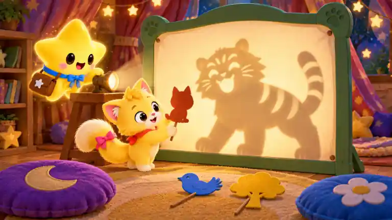
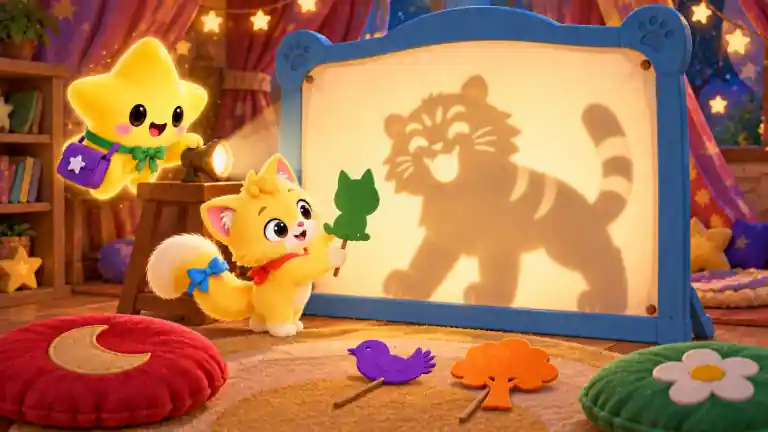
猫粉尾饰变蓝；星伴蓝领结变绿；棕包变紫；绿屏框变蓝；猫剪影柄变绿；虎尾三纹变两纹；蓝鸟剪影变紫；黄树剪影变橙；紫月垫变红；蓝花垫变绿
舞台帘、灯泡、服装架、面具、帽子、图形卡和地面标记构成多层细节。
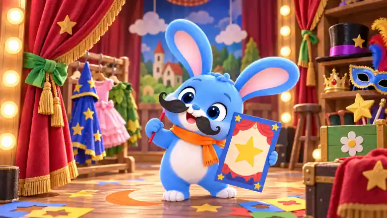
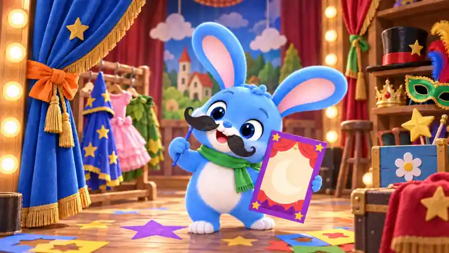
兔橙巾变绿；胡子红杆变蓝；节目卡蓝边变紫；卡黄星变白月；左红帘变蓝；绿帘带变橙；帽紫带变红；蓝面具变绿；橙月地标变紫星；绿花箱变蓝
双角色之外仅有铃、纸帽、帘边和单个道具箱，舞台背景大面积简洁。
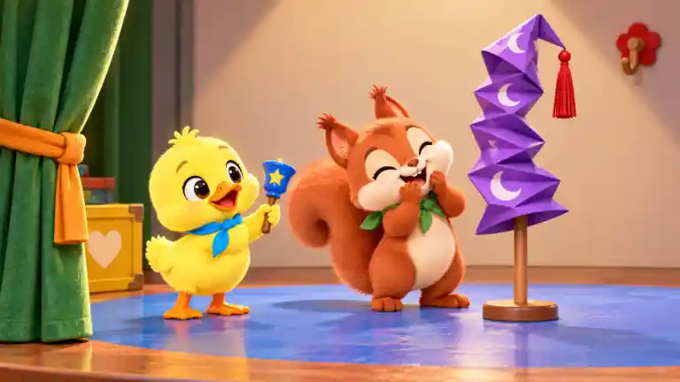
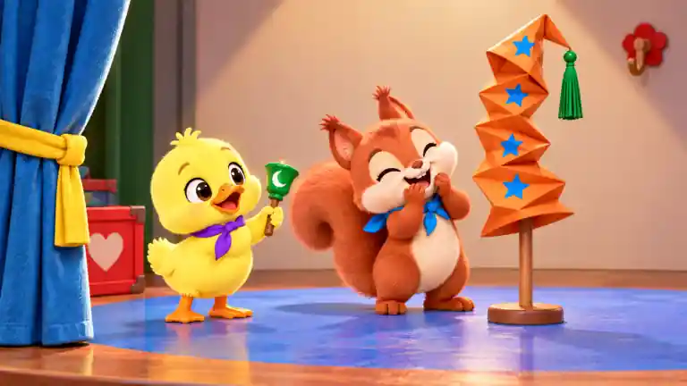
鸭蓝巾变紫；松鼠绿巾变蓝；蓝铃变绿；铃黄星变白月；紫纸帽变橙；帽白月变蓝星；红帽穗变绿；绿帘变蓝；橙帘带变黄；黄心箱变红
双角色、旅行袋、长椅、路牌、灯笼与舞台绘景形成适中搜索区域。
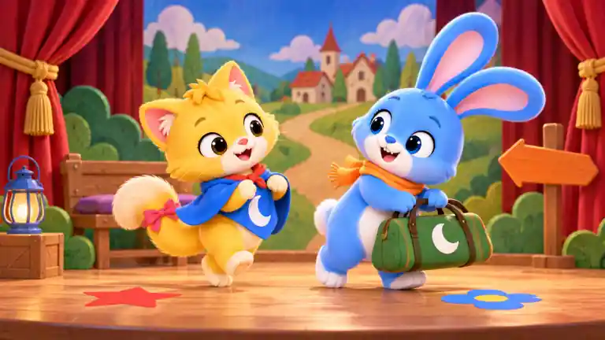
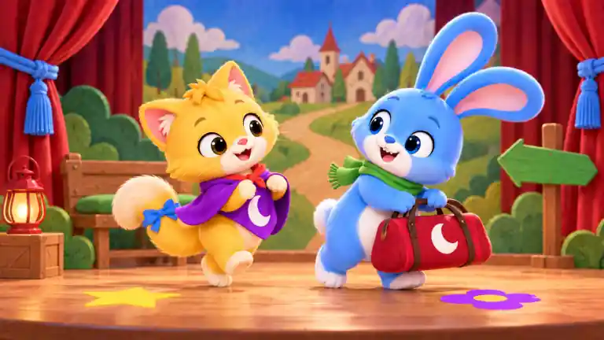
猫粉尾饰变蓝；猫蓝披风变紫；兔橙巾变绿；绿旅行袋变红；红星地标变黄；蓝花地标变紫；紫凳垫变绿；黄帘带变蓝；橙箭头变绿；蓝灯笼变红
双角色、鼓铃、三张节奏卡、图案地板、幕帘、脚灯和乐器架细节丰富。
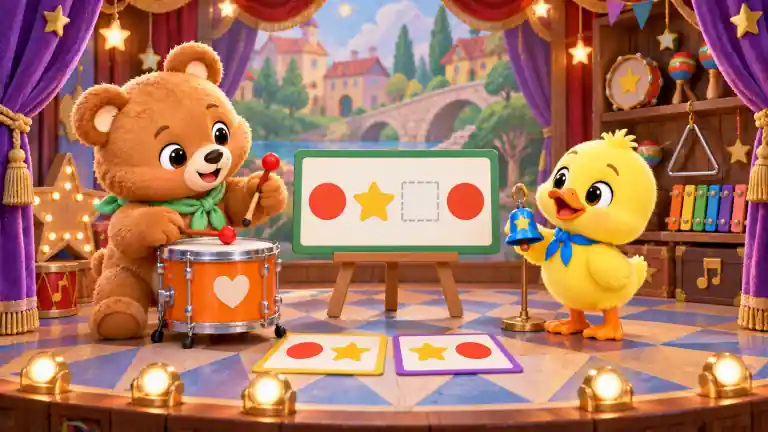
熊绿巾变紫；鸭蓝巾变绿；橙鼓变蓝；鼓槌红头变黄；蓝铃变紫；主卡绿边变红；卡红圆变蓝；卡黄星变橙；左紫帘变绿；蓝三角地纹变黄
单角色、一块大屏、四张大剪影和少量坐垫披风，布局安静清晰。
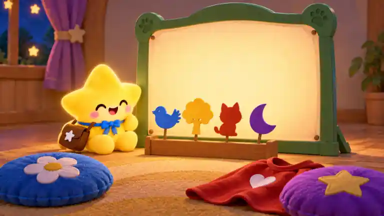
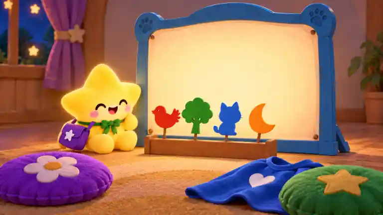
星伴蓝领结变绿；棕包变紫；绿屏框变蓝；蓝鸟变红；黄树变绿；红猫变蓝；紫月变橙；蓝花垫变紫；紫星垫变绿；红心披风变蓝
三角色围绕三件大主道具，舞台边、坐垫、衣架和幕帘提供适中背景。
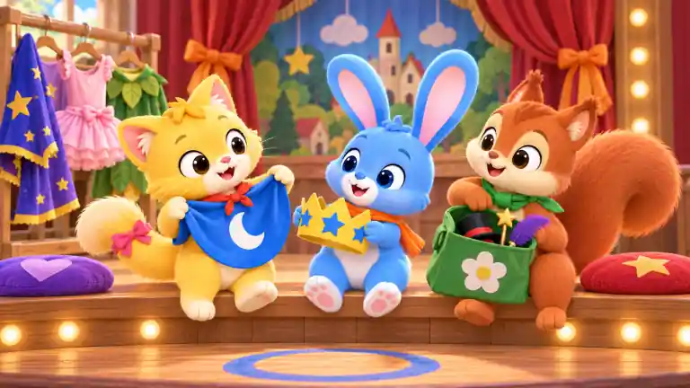
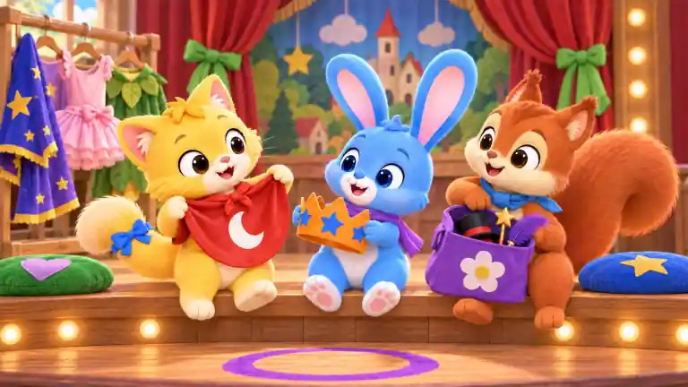
猫粉尾饰变蓝；兔橙巾变紫；松鼠绿巾变蓝；蓝月披风变红；黄冠变橙；绿花袋变紫；左紫心垫变绿；右红星垫变蓝；橙帘带变绿；蓝圆地标变紫